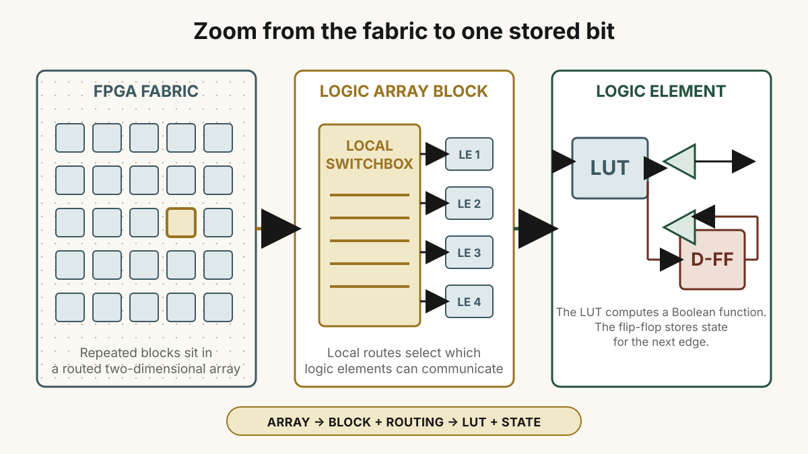
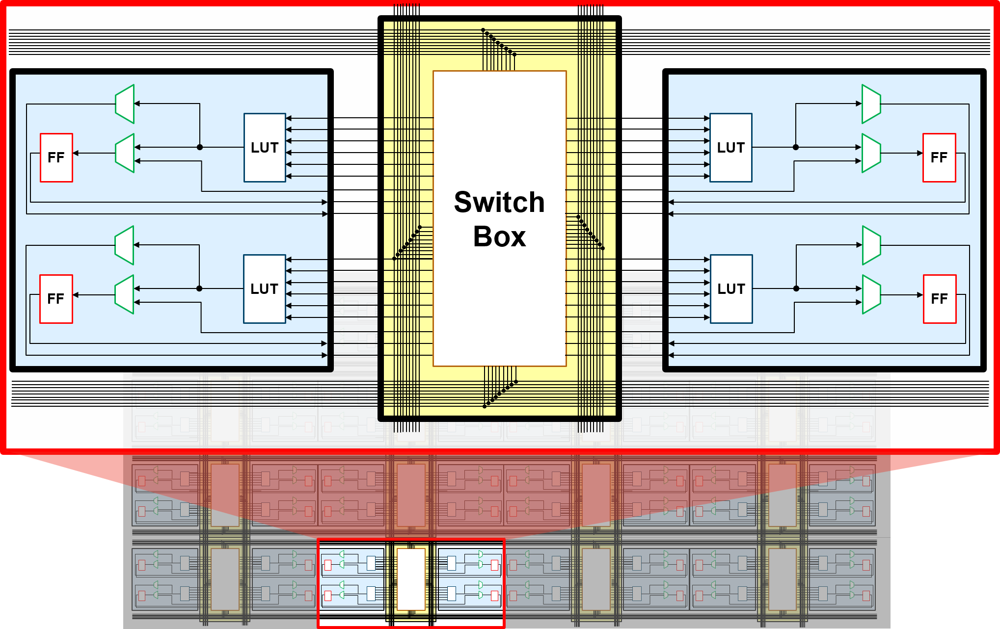

The Logic Array: Repetition Plus Exceptions
At the heart of a conventional FPGA is a large array of “copy-pasted” programmable logic. Repetition makes the chip manufacturable and gives implementation tools many candidate sites for a design. A small Boolean function may fit almost anywhere; a larger datapath can spread across many neighboring sites.
The repeated array is not the whole device. Around and among it are I/O banks, block memories, arithmetic or DSP units, clock networks, configuration logic, and sometimes high-speed transceivers or processor cores. These hard resources are not interchangeable with a generic LUT, and their positions make the fabric deliberately nonuniform.
A useful top-level inventory is:
- programmable logic for small Boolean functions and local state;
- configurable interconnect that carries signals among resources;
- I/O that connects named top-level ports to package pins and electrical standards;
- memory, arithmetic, clocking, and other hard blocks for structures that would be wasteful or slow to rebuild entirely from LUTs; and
- configuration state that tells all of those resources what role to play.
Intel’s FPGA architecture overview is one first-party example of these categories. It is an example, not a universal die plan.

One Block, Several Dialects
The curriculum calls a repeated region a logic array block, or LAB, and the smaller parts inside it logic elements, or LEs. Those are useful words, but they come from particular vendor families. Intel devices use terms such as LAB and ALM; AMD devices use CLB, slice, LUT, and flip-flop; Lattice families commonly expose logic cells or slices built around LUT/register pairs. Even within one vendor, generations differ.
Do not memorize the words as if they specify a universal size. A LAB is not reliably “one byte” of Boolean trees, and eight bits are not an architectural unit across FPGA families. Read the target device’s architecture manual when resource counts, carry chains, shared controls, and packing rules matter.

The Switchbox Is Part Of The Computation
A logic block does not become useful merely because it can compute a function. Its inputs must come from somewhere, and its outputs must reach something else. Configurable switches select connections among local wires, neighboring blocks, longer row or column tracks, I/O, memories, and other resources.
“Switchbox” is a good visual name, but an FPGA routing network has several scales. Short local connections make nearby producer-consumer paths cheap. Longer wires cross larger regions. Dedicated networks carry clocks, resets, enables, or carry signals under special rules. The architecture offers a finite graph; place-and-route finds legal sites and paths through that graph.
This is why two logically equivalent RTL descriptions can produce different timing or resource use. The Boolean equations are only part of the physical problem. Where a function is placed, how its signals are routed, how many switch points they traverse, and which scarce special resources they consume all affect the built circuit.
A LUT Stores A Small Truth Table
A lookup table, or LUT, implements a small Boolean function. For a LUT with k inputs, configuration bits store the output for each of the 2^k possible input combinations. During operation, the input bits select one stored result.
That does not mean synthesis literally preserves every expression as a truth table written by the designer. The tools simplify logic, share or duplicate terms, recognize arithmetic and multiplexing structures, and map the result into the device’s available LUT shapes. A function larger than one LUT is decomposed across several LUTs and routing paths.
LUTs are general, but not always the best implementation. A carry chain can implement arithmetic more efficiently than ordinary routing. A block RAM can store data more densely than a bank of LUTs. A DSP block can perform multiplication or accumulation faster and with less general fabric. Good RTL leaves room for the tool to infer the right resource, while deliberate architecture makes that inference inspectable.
The Register Makes A Result Persist
Many logic elements place a flip-flop beside the LUT. The LUT can compute a combinational result; the register can capture a selected result at a clock edge and hold it. Local multiplexers may choose a direct combinational output, a registered output, a carry result, or another family-specific path.
This physical pairing supports the “D is next; Q is current” model from the previous chapter. It also makes pipelining practical: one region computes part of a result, nearby registers hold that stage, and the next region continues on the following cycle.
Registers are not free and routing is not limitless, but this repeated LUT/register structure is why an FPGA can hold many small state machines and pipelines at once. The bitstream determines which resources are active and how they are joined; the clock and inputs then drive the configured circuit.
Read Architecture Drawings At The Right Scale
An architecture drawing can answer three different questions:
- Chip scale: where are logic, memory, DSP, I/O, clocking, and hard subsystems?
- Block scale: what does one repeated logic group contain, and which controls or carry resources are shared?
- Element scale: how do a LUT, register, local multiplexers, and dedicated paths connect?
Do not infer transistor-level detail from a block diagram or assume a teaching graphic is a literal die map. Use it to form a question, then confirm the answer in the family architecture manual and tool reports.
For a concrete family view, RapidWright’s FPGA Architecture Basics explains AMD/Xilinx Series 7 resources and terminology. It is the full reference promised by the original curriculum’s “find more details here” note, scoped to the family it actually describes.